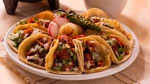

MOLE
Su termino se refiere a varios tipos de salsa,que normalmente se utiliza en fiestas.Comunmente va acompañado con arroz,pollo,tortillas,etc.
INGREDIENTES:
PROCEDIMIENTO:
1-Poner los chiles en una plancha(comal) caliente, voltearlo frencuentemente para que no se quemen.
2-En un resipiente remojar los chiles con agua tibia durante 15 minutos (hasta que esten blandos).
3-Despues coloque en la plancha o comal el tomate,cebolla y el ajo, girandolos frencuentemente.
4-Deseche el agua utilizada en los chiles. Luego tendras que licuar los tomates,ajo,chiles y cebolla.
5-Calienta una cucharada de aceite a fuego medio alto y cuidadosamente poner la salsa sobre el. Despues de 5 minutos reducir a fuego lento, agrege el chocolate mexicano o Piloncillo.
6-Rebuelva para evitar que la salsa se pegue.
7-Lo podemos acompañar con arroz, pollo y tortillas.
8-Por ultimo:
¡A DISFRUTAR!
Te puedes guiar con el video para el procedimiento:
POZOLE
El pozole es una sopa tradicional mexicana hecha a base de granos de maiz, al cual se agrega carne,verduras y especies variadas segun la region.
INGREDIENTES:
- 4 Liros de agua.
- 1 kilo de carne de puerco cortada en cubitos.
- 1/2 Kilo de costilla de puerco cortada en trozos.
- 3 Latas o bolsa de maiz para pozole.
- 1 cebolla blanca cortada en 4.
- 8 dientes de ajo grande.
- Sal.
- 5 chiles anchos limpios.
- 5 chiles guajillo limpios.
- 6 dientes de ajo.
- 1/2 cebolla mediana.
- 2 cucharadas de aceite
- 1/2 cucharada cafetera de oregano.
- GUARNICION:lechuga picada,cebolla blanca picada,rabanos rebanados,tortillas,limones,etc.
PROCEDIMIENTO:
1-Poner los 6 litros de agua a calentar en una olla grande.Agrega la cebolla,el ajo,la sal,la carne y las costillas.
2-Cuando suelte el hevor baja la flama para que se cocine la carne aproximadamente 2 horas y media.
3-Revuelve con la cuchara la capa de espuma y grasa que se mire en la superficie.
4-Cuando la carne este cueza,separala del caldo. Quirtar al caldo el exceso de grasa,los huesos de las costillas,cebolla y el ajo.
5-Para preparar la salsa, remoja los chiles anchos y guajillo durante 25 minutos con agua que los cubra completamente.
6-Cuando los chiles esten blandos,escurrelos y colocalos en una licuadora junto con el ajo,la cebolla y el oregano. Licua hasta que paresca salsa suave.
7-Calienta el aceite en un sarten y con muncho cuidado pon la salsa en el sarten y pon sal(Revuelve constantemente). Reduce la flama y hierve a fuego lento por aproximadamente 25 minutos.
8-Agrega la salsa al caldo pasandola por un colador. Deja que el hevor y agrega la carne.Despues hierve a fuego bajo aproximadamente 10 minutos.Agrega el maiz y pon sal.
9-Sigue cocinando hasta que ya este el maiz completamente cocido.
10-Lo colocas en un plato y le pones la guarnicion.
11-Por ultimo:
¡A DISFRUTAR!
Te puedes guiar con el video para el procedimiento:
TACOS
El taco es una preparacion culinaria muy popular de Mexico que consiste en una tortilla, generalmente de maiz,que se dobla o se enrolla para contener dentro diversos ingredientes y algun tipo de salsa.
INGREDIENTES:
- 1/2 kilo de carne molida de cerdo.
- 1/2 kilo de chorizo.
- 1 cebolla grande.
- Sal.
- Tortillas.
- 1 cebolla finamente picada.
- Una taza de cilindro.
- Limones.
- Salsa.
- Aceite.
PROCEDIMIENTO:
1-Mezcla muy bien la sal y la carne molida,luego pomla a freir en una cacerpola (con un poco de aceite).
2-Cuando se empiece a cocerse, agrega la mitad de cebolla y ponlo a freir por 20 minutos aproximadamente.
3-Cuando la carne este ya casi cocida,se hace hacia los lados de la cacerola y en el centro se agrega el chorizo,dejalo freir por 3 minutos.
4-Mezcla bien la carne y el chorizo y se agraga el resto de la cebolla y dejalo en la lumbre por 15 a 20 minutos aproximadamente.
5-Cuando la carne ya este completamente cocida, se apaga el fuego y se preparan los tacos.
6-La acompañas con cebolla,cilantro, limon y salsa.
7-Por ultimo:
¡A DISFRUTAR!
Te puedes guiar con el video para el procedimiento:
ENCHILADAS
Las enchiladas es un platillo MEXICANO,que consiste ser elaborado con tortillas de maiz enrolladas o dobladas,bañadas en salsa.
INGREDIENTES:
- 4 chiles guajillos ya limpios.
- 4 chiles anchos ya limpios.
- 2 dientes de ajo.
- 1/4 de una cucharadita de oregano.
- Sal.
- 5 tortillas de maiz.
- 2 tazas de carne deshebrada de pollo o queso oxaca (Quesillo).
- 1 1/2 taza de quso fresco desboronado.
- 1/ taza de cebolla blanca picada.
- 1/3 taza de aceite
- Crema.
- Zanahoria cortada en cuadritos.
- Ppas cortadas en cuadritos.
- Lechuga picada.
PROCEDIMIENTO:
1-En un comal tostar los chiles mas de 10 segundos por lado.
2-Una vez tostados, colocarlos en una cacerola con agua y cocinarlos a fuego lento, durante15 minutos hasta que esten blandos.
3-Retirarlos y dejarlos enfriar por 15 minutos.Cuando este esto listo poner los chiles,ajo,agua y la 1/2 cebolla en la licuadora y licuar hasata tener una salsa suave.
4-En un sarten grande colocar el oregano,sal y aceite,a fuego medio.
5-Sumerje las tortillas en la salsa y meterlas con muncho cuidado al sarten.
6-Cuando la tortilla este lista poner el pollo o el queso y enrollar o doblar en 2.
7-Les puedes poner en sima salsa,queso desboronado,crema,zanahorias,papas,lechuca y salsa.
8-Por ultimo:
¡A DISFRUTAR!
Te puedes guiar con el video para el procedimiento:
GUACAMOLE
El guacamole es una salsa mexicana, que consiste en moler Jitomate,ajo,sal,aguacate ychiles.

INGREDIENTES:
- 3 jitomates.
- Un diente de ajo.
- Sal.
- Aguacate.
- 5 chiles.
- Tortillas.
PROCEDIMIENTO:
1-Calentar en un comal los chiles y jitomates.
2-Cuando esten listos moler junto con el ajo y la sal.
3-Tambien moler el agucate(Este tiene que ir sin casacara).
4-El gucamole lo puedes acompañar con tortillas.
5-Por ultimo:
¡A DISFRUTAR!
Te puedes guiar con el video para el procedimiento:
QUESADILLA
La quesadilla es un platillo mexicano que consiste en una tortilla de maiz doblada a la mitad,lleva por dentro queso y salsa.

INGREDIENTES:
- Tortillas.
- Queso oxaca o quesillo.
- 4 Chiles.
- Un diente de ajo.
- 3 jitomates.
- Sal.
PROCEDIMIENTO:
1-En un comal calienta el chile y el jitomate, para hacer una salsa.
2-Cuando esten listos ponerlos junto al ajo y sal en una licuadora y licuar.
3-Con ayuda de un rayador pasar el queso sobre el.
4-En un comal poner la tortilla y encima colocar el queso ya rayado.
5-Cuando este en el comal doblarlo a la mitad con atuda de un boltiador.
6-Le puedes poner la salsa que hiciste, por dentro de la quesadilla.
7-Por ultimo:
¡A DISFRUTAR!
Te puedes guiar con el video para el procedimiento:
NOPALES
Es un alimento antiguo de mexico,sus caracteristicas se definen que tiene un color verde,una textura dura y un cuerpo espinoso.
INGREDIENTES:
- 6 nopales pelados (sin espinas).
- 1/2 cebolla.
- Aceite.
- Sal.
- 2 chiles.
PROCEDIMIENTO:
1-Cortar los nopales en rajitas.
2-Cortar la cebolla en rajitas.
3-En una cacerola a fuego lento colocar el aceite,la cebolla,los nopales y chiles.
4-Poner poquita sal.
5-Apagar cuando los nopales tomen otro color verde.
6-Por ultimo:
¡A DISFRUTAR!
Te puedes guiar con el video para el procedimiento:
BURRITOS
El burrito es de origen mexicano,que consiste en una tortilla de trigo enrollada, rellenada con diferentes ingredientes y normalmente suele estar acompañada con frijoles fritos.
INGREDIENTES:
- Tortillas de trigo.
- Frijoles fritos.
- Aceite.
- Queso oxaca o quesillo.
- Carne molida.
- Aguacate.
- salsa.
PROCEDIMIENTO:
1-Cocer la carne molida.
2-Hacer el queso en rajitas.
3-En un comal poner una tortilla con el queso.
4-Cuando este lista, debes poner la carne molida, los frijoles fritos y el agucate (Y si quieres salsa).
5-Cuando ya acabaste de poner tus ingredientes,debes enrollar la tortilla con todos sus ingredientes.
6-Por ultimo:
¡A DISFRUTAR!
Te puedes guiar con el video para el procedimiento:
TOTOPOS
Los totopos son pedasos fritos o tostados de tortilla de maiz y se acompañada con salsas,frijoles,guacamole,etc.

INGREDIENTES:
- 6 tortillas.
- Aceite.
- Sal.
- Salsa,aguacate o frijoles,etc.
PROCEDIMIENTO:
1-Parte las tortillas en 4 partes.
2-En una casuela a fuego medio poner aceite.
3-Despues en la casuela poner los cachos de tortilla y poner sal.
4-Cuando veas que ya esten duros,debes de sacarlos.
5-Los puedes acompañar con salsa,guacamole,frijoles,etc.
6-Por ultimo:
¡A DISFRUTAR!
Te puedes guiar con el video para el procedimiento:
PICO DE GALLO
Es una salsa o ensala mexicana,que consiste en llevar jitomate,cebolla,cilantron y chile.
INGREDIENTES:
- 4 jitomates.
- 1/2 cebolla.
- Limon.
- 2 chiles.
- 5 ramitas de cilantro.
- Sal.
PROCEDIMIENTO:
1-Cortar el cilantro,jitomates,chiles y cebolla en cuadritos.
2-Cuando los cortes, mezclarlos muy bien en un recipiente.
3-Cortar en 2 el limon.
4-Despues esprime el limon en el recipiente donde mezclaste y poner sal.
5-Mezcla muy bien.
6-Por ultimo:
¡A DISFRUTAR!
Te puedes guiar con el video para el procedimiento:
SOPES
Es una comida mexicana,que consiste en una tortilla grusa y ancha (pellizcadas del contorno),suele llevar frijoles,lechuga,queso,crema,etc.

INGREDIENTES:
- Masa.
- Lechuga.
- Agua.
- Queso desboronado.
- Crema.
- Salsa
- Frijoles fritos.
PROCEDIMIENTO:
1-Le pones agua a la masa (pero que no quede muy aguada).
2-Con ayuda de una prensa (o con la mano) has una tipo tortilla gruesa y ancha.
3-Colocala en un comal.
4-Cuando este lista con muncho cuidado tendras que pellizcarlas cuando esten calientes (o esten un poco frias).
5-Despues le pones encima los frijoles fritos,lechuga,queso,crema y salsa (Es preferible si quieres ser este orden de colocarlos).
6-Por ultimo:
¡A DISFRUTAR!
Te puedes guiar con el video para el procedimiento:
TAMAL ROJO
El tamal es originario de mexicano,que consiste ser una bola larga que contiene adentro carne o queso y salsa,o otro tipo de ingrediente,etc.

INGREDIENTES:
- (ESTO ES PARA 8 A 10 PERSONAS)
- 1 kilo de masa blanca para tortillas.
- 1/2 litro de caldo donde se cocio la carne de relleno.
- 400 gramos de manteca de cerdo.
- 11/2 cucharadas de polvo para hornear.
- 1 cucharada de sal.
- 50 hojas de maiz para tamal lavadas,remojadas y secas.